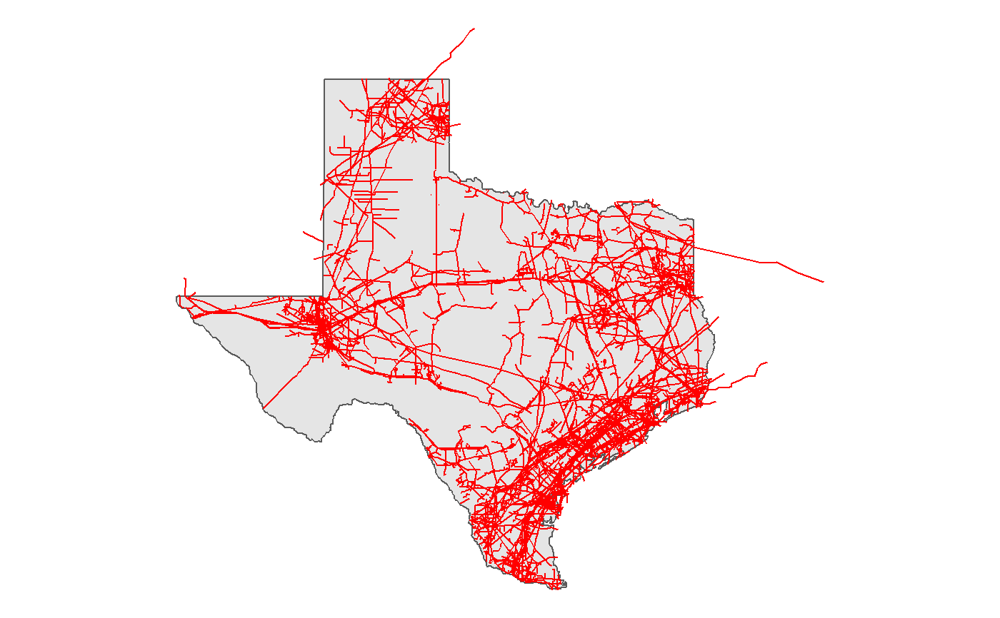
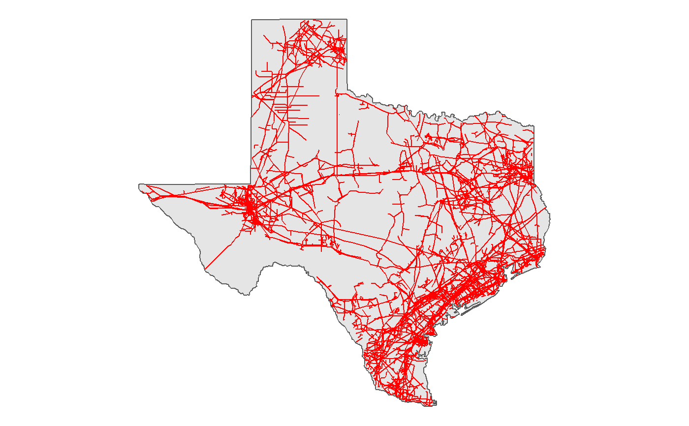
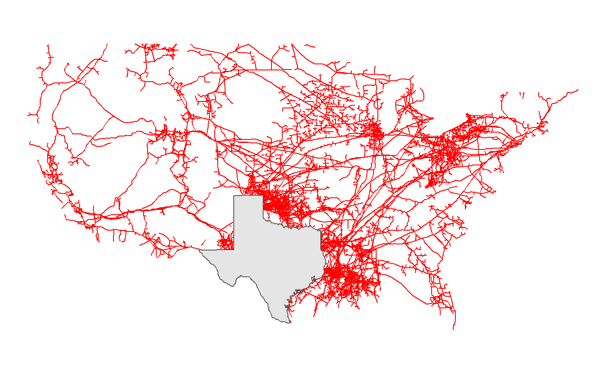

Both st_left_join() and st_inner_join()
are wrappers around sf::st_join() with
appropriate argument handling for left.
Both st_anti_join() and st_semi_join()
are wrappers around sfx::st_any() used within
dplyr::filter() (plus the application of
logical ! where appropriate).
st_left_join(x, y, ...) st_inner_join(x, y, ...) st_semi_join(x, y, join = sf::st_intersects, ...) st_anti_join(x, y, join = sf::st_intersects, ...)
| x | object of class |
|---|---|
| y | object of class |
| ... | arguments passed on to the |
| join | geometry predicate function with the same profile as st_intersects; see details |
library(sf) library(ggplot2) library(dplyr) data(states_map) data(ngp) show_map <- function (x) { ggplot(x) + geom_sf(data = tx) + geom_sf(color = "red") + theme_void() } # MUTLIPOLYGON of the US state of Texas tx <- states_map %>% filter(region == "texas") # [Semi-join] Intersects (Default) ngp %>% st_semi_join(tx) %>% show_map()#>#># [Anti-join] Intersects (Default) ngp %>% st_anti_join(tx) %>% show_map()#># [Inner-join] Intersects (Default) ngp %>% st_inner_join(tx)#>#> Simple feature collection with 7356 features and 7 fields #> geometry type: MULTILINESTRING #> dimension: XY #> bbox: xmin: -106.57 ymin: 25.9161 xmax: -90.89331 ymax: 37.5533 #> epsg (SRID): 4326 #> proj4string: +proj=longlat +datum=WGS84 +no_defs #> # A tibble: 7,356 x 8 #> FID TYPEPIPE Operator Shape_Leng Shape__Length geometry #> <int> <chr> <chr> <dbl> <dbl> <MULTILINESTRING [°]> #> 1 1006 Intrast~ Centana~ 0.00586 746. ((-93.98166 29.87355, -9~ #> 2 1008 Intrast~ Centana~ 0.00902 1142. ((-93.98018 29.87922, -9~ #> 3 1011 Intrast~ Texas I~ 0.00567 631. ((-94.60664 29.66106, -9~ #> 4 1012 Intrast~ Centana~ 0.0141 1642. ((-93.98316 29.88773, -9~ #> 5 1014 Intrast~ Texas I~ 0.0505 6354. ((-94.58138 29.59862, -9~ #> 6 1015 Intrast~ Texas I~ 0.00329 367. ((-94.56302 29.55162, -9~ #> 7 1016 Intrast~ Texas I~ 0.00426 480. ((-94.56302 29.55162, -9~ #> 8 1017 Intrast~ Texas I~ 0.00694 773. ((-94.5671 29.5504, -94.~ #> 9 1018 Intrast~ Texas I~ 0.0396 4440. ((-94.57576 29.66976, -9~ #> 10 1019 Intrast~ Texas I~ 0.0144 1801. ((-93.96528 29.93387, -9~ #> # ... with 7,346 more rows, and 2 more variables: group <dbl>, region <chr>